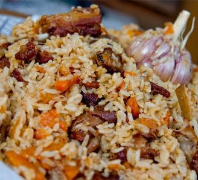

Bukharan Plov With Beef, Carrots and Cumin Seeds

Plov is a Central Asian recipe that uses medium grain rice,meat, cumin, barberries, carrots, and beef, but there can be many different variations of it, this is just 1 example
Ingredients
Plov:
- 1/4 cup vegetable oil
- 2 tablespoons sesame-seed oil
- 2 large spanish onions, diced
- 2 cloves garlic, minced
- 3 pounds beef round or chuck, cut into 1 1/2-inch cubes
- 1 tablespoon cumin seeds, preferably Uzbeki, plus more to taste
- 1 tablespoon sea salt, plus more to taste
- 1/2 teaspoon black pepper
- 1/4 cup of barberries
- 10 large carrots, peeled and cut in 2-inch lengths, then shredded in a food processor or by hand
- 1 1/2 pounds medium-grain rice, preferably Kokuho Rose extra fancy sushi
- 1/4 teaspoon cayenne, plus more to taste
- 2 scallions, fiely chopped for garnish
- 1 handful pomegranates seeds for garnish
Preparation
Step 1
- Combine oils in a 7-quart pot over medium-high head.
Add onions and garlic and cook, stirring occasionally,
for 10 to 15 minutes until the onions "taste of oil" and are golden
;remove to plate.
Step 2
- Add the beef in 2 batches, cooking until browned on all sides, about 30
minutes. Return the beef and onions to the pot, then add 1 1/2 teaspoons of
the cumin seeds, 1 1/2 teaspoons of the salt, the black pepper, half the
barberries and a handful of the carrots. Add enough water to cover, about 6
cups. Bring to a boil, then cover the pot and simmer over medium heat for 35
minutes.
Step 3
- While the meat is cooking, wash the rice in a large sieve with cold
water until the water runs clear. Soak the rice in warm water for 15
minutes to open it up, drain.
Step 4
- Toss the remaining carrots with the remaining salt and the cayenne.
Spoon the carrots in a layer over the meat, adding more water if
needed to cover the carrots. Cover the pot and cook for just a few
minutes.
Step 5
- Without disturbing the carrots, spoon the rice gently on top. Cook,
stirring the rice every 10 minutes and making sure not to touch the
carrots until the water is evaporated and the rice cooked, about 30
minutes in all. Cover the pot and cook over low heat for 10 more
minutes.
Step 6
- To serve, spoon the rice onto a large platter, then top with the
carrots and meat. Sprinkle the scallions on top, along with the
remaining cumin seeds, barberries and pomegranate seeds.